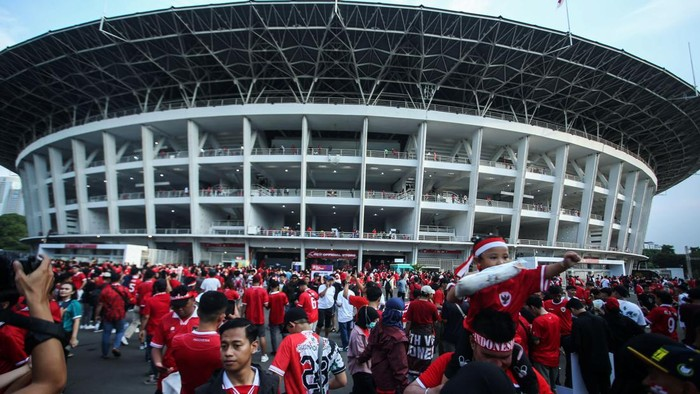

Seskab Beberkan Langkah Pemerintah Respons Tambang Nikel di Raja Ampat
Sekretaris Kabinet (Seskab) Teddy Indra Wijaya merespons ramai penolakan tambang nikel yang disorot terjadi di wilayah Raja Ampat, Papua Barat Daya. Teddy mengatakan pemerintah telah menindaklanjuti masalah tersebut. "Sudah, sudah langsung ditindaklanjuti," kata Teddy kepada wartawan, Kamis (5/6/2025).
Warga dari 12 Negara Ini Dilarang Trump Masuk ke AS
Presiden Amerika Serikat (AS) Donald Trump menandatangani aturan yang melarang semua perjalanan dari negara-negara tertentu. 'Proklamasi' tersebut sepenuhnya membatasi masuknya warga dari 12 negara: Afganistan, Cad, Republik Kongo, Guinea Ekuatorial, Eritrea, Haiti, Iran, Libia, Myanmar, Somalia, Sudan, dan Yaman.
Simak! Kantong Parkir dan Akses ke GBK Saat Laga Timnas Vs China

Kawasan sekitar Stadion Gelora Bung Karno (GBK) berpotensi macet malam ini karena ada pertandingan Kualifikasi Piala Dunia 2026 antara Timnas Indonesia melawan China. Pendukung diimbau menggunakan transportasi umum untuk menghindari kemacetan.